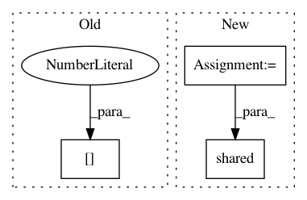

1be7c5996fa959572854044d3cc580a2abc6bfa7,snntoolbox/core/inisim.py,,init_neurons,#Any#Any#Any#,266
Before Change
if settings["online_normalization"]:
self.max_spikerate = theano.shared(np.asarray([0.0], "float32"))
if self.layer_type == "SpikeMaxPooling2D":
prev_layer = self.inbound_nodes[0].inbound_layers[0]
prev_layer.spikerate = shared_zeros(self.output_shape)
def get_new_thresh(self, time):
After Change
def init_neurons(self, input_shape, tau_refrac=0.0):
Init layer neurons.
output_shape = self.get_output_shape_for(input_shape)
self.v_thresh = shared_x(settings["v_thresh"], name="v_thresh")
self.tau_refrac = tau_refrac
self.mem = theano.shared(np.zeros(output_shape, floatX))
self.layer_type = self.__class__.__name__
// To save memory and computations, allocate only where needed:
if settings["tau_refrac"] > 0:
self.refrac_until = theano.shared(np.zeros(output_shape, floatX))
In pattern: SUPERPATTERN
Frequency: 3
Non-data size: 3
Instances
Project Name: NeuromorphicProcessorProject/snn_toolbox
Commit Name: 1be7c5996fa959572854044d3cc580a2abc6bfa7
Time: 2016-11-25
Author: bodo.rueckauer@gmail.com
File Name: snntoolbox/core/inisim.py
Class Name:
Method Name: init_neurons
Project Name: Theano/Theano
Commit Name: 9db32ceedaef0873f99b4a7f400e705dd6d64173
Time: 2016-10-12
Author: gvtulder@gmail.com
File Name: theano/sandbox/cuda/tests/test_gemmcorr3d.py
Class Name: TestCorr3DMM
Method Name: run_gradinput
Project Name: Kamnitsask/deepmedic
Commit Name: b2f9f5dbaa24a39e6cea2f8f8df0dd721c0e467e
Time: 2017-10-30
Author: konstantinos.kamnitsas12@imperial.ac.uk
File Name: deepmedic/neuralnet/ops.py
Class Name:
Method Name: createAndInitializeWeightsTensor